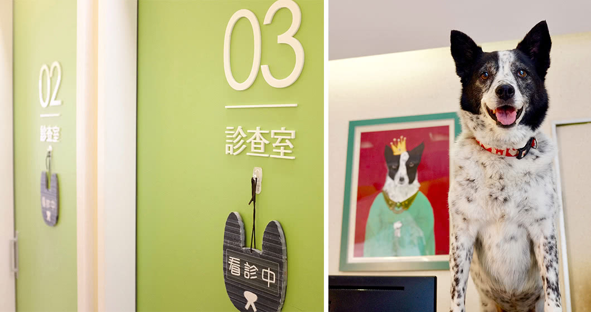
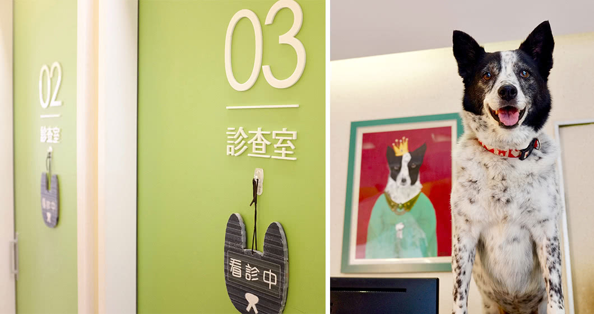
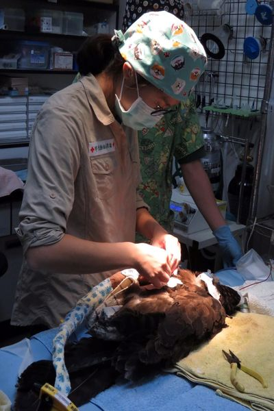

隨著國人飼養寵物的種類日漸增多，我們也有專門獸醫師負責兔、貂、鳥、猴、魚與爬蟲類等動物。(特寵無急診服務)
當您觀察到家中的小寶貝有如下症狀時，敬請儘速就醫：
在資訊爆炸的時代，似乎任何資訊都可以在網路上輕易取得，但也同時在造成許多誤解與迷思充斥在身邊。以養兔為例，獸醫師常在門診發現對於飼養兔子存在錯誤觀念的飼主，其中又以「兔子喝水會拉肚子，所以不用喝水」的迷思，最讓人感到吃驚。
兔子是草食動物，盲腸是最主要的消化器官，存在著許多幫助消化的益生菌。若一旦纖維攝取不足，或餵食不適合的食物（例如澱粉類、含糖量高的點心），會導致腸道的壞菌異常增生、益生菌數量減少，便會出現一連串的消化道問題，像是最常見的脹氣、腸胃蠕動停滯、下痢等症狀。
讓寵物兔攝取足夠的纖維，也能防止牙齒過度生長。終其一生，兔子的牙齒都會不停生長，需要倚賴食物中的長纖維來磨牙。由於兔子在咀嚼牧草和飼料時牙齒咀嚼移動的方向不同，故光餵食飼料並無法達到磨牙效果。牙齒一旦過長會引發許多問題，像是牙冠過長會在嘴巴裡刮傷舌頭和口腔，齒根過長則可能在臉上引發腫起的膿包，或造成鼻淚管阻塞發炎，導致眼淚流不停。
在現代人方便飼養的前提下，建議以乾燥牧草為主食，式讓寵兔願意吃多少就盡量吃。飼料則作為輔助，少量給予即可。市售乾燥牧草的種類相當多，以一般成年兔子來說，常見的提摩西草、果園草、小麥草、甜燕麥草皆可以作為主食。若是有減肥需求的兔子，可以混合些熱量較低的百慕達草。而成長中的幼兔則建議餵飼蛋白質，和鈣質較高的苜蓿草。
由於市售兔子飼料五花八門，飼主們在選擇飼料時，應注意包裝上標示的粗纖維含量至少須達18~20%以上，並且不應像倉鼠飼料那樣，由綜合穀物（例如燕麥片和種子）。每日餵食量因寵物兔體重與飼料種類而異，請參考專業飼料包裝上的建議，或詢問兔科獸醫師。
至於飲水，兔子不喝水會有生命危險，尤其在以乾草為主食、食物中含水量幾乎等於零的情況下。因此請確保寵兔隨時都能喝到乾淨的飲用水，使用一般煮過放涼的開水即可。臨床上常見的兔子疾病，有八成以上都是因為不適當的飲食所引起的，衷心期盼各位飼主在養兔子之前都能做足功課，負起您對家中親愛寵兔的責任，好好照顧牠直至終老。
伊甸園動物醫院，關心您兔子的健康
精神活動力明顯下降、虛弱、雙腳無力、呼吸急促、開口呼吸
明顯外傷、大量出血、骨折、眼球脫出、嗉囊破裂、泄殖腔脫垂
超過半天以上未進食或食慾不振，可能會導致低血糖休克造成失溫、昏迷、全身無力等症狀
提醒您可先用暖暖包保溫，若鳥非常緊張會在籠中撞擊掙扎，建議使用已戳好洞可透氣之不透明紙箱運送鳥至醫院就診，紙箱可墊毛巾等柔軟材質避免傷害
長時間精神活動力下降、完全不進食、虛弱、對外界刺激無反應
明顯可見之外傷、裂殼、大量出血、骨折、眼球脫出、泄殖腔脫垂
墜樓或摔落、車禍、輾壓、踩踏造成的傷害
蛙或蠑螈等兩棲類就醫請另外以乾淨容器盛裝飼養環境內的水約100cc，以便獸醫師進行水質檢驗釐清病因
特寵醫師
- 
- 國家獸醫師專門職業及技術人員高等考試合格
- 國立中興大學獸醫學系學士
- 特有生物研究保育中心野生動物急救站獸醫師
{kind=link}